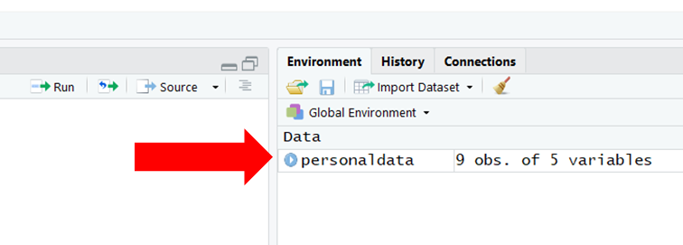

Chapter 4 Data Acquisition
Functions & Packages Introduced
| Function | Package |
|---|---|
read.csv |
base |
read_csv |
readr |
Read |
lessR |
excel_sheets |
readxl |
read_excel |
readxl |
View |
base |
print |
base |
head |
base |
tail |
base |
names |
base |
colnames |
base |
install.packages |
base |
library |
base |
write.csv |
base R |
write.table |
base R |
table |
base R |
4.1 Reading Data to R
Link to Video Tutorial: https://youtu.be/smWjqhaxHY8
Reading data refers to the process of importing data from a working directory or website into the R environment. When we read a data file into R, we often read it in as a data frame (df), where a data frame is a tabular display with columns representing variables and rows representing cases. Many different data file formats can be read into R as data frames, such as .csv, .xls/x, .txt, .sas7bdat (SAS), and .sav (SPSS). Finally, as you will learn in this tutorial, different functions can be used to read data into R.
4.1.1 Initial Steps
Any function that appears in the Initial Steps section has been covered in a previous chapter. If you need a refresher, please view the relevant chapter. In addition, a previous chapter may show you how to perform the same action using different functions or packages.
You can access the data for this project using two methods. As the first option, you can save the file called "PersData.csv" and "PersData_Excel" into a folder on your computer that you set as your working directory. As a reminder, you can access all of the data files referenced in this R book by downloading them as a compressed (zipped) folder from the my GitHub site: https://github.com/davidcaughlin/R-Tutorial-Data-Files; once you've followed the link to GitHub, just click "Clone or Download" followed by "Download ZIP", which will download all of the data files for this book. For the sake of parsimony, I recommend downloading all of the data files into the same folder on your computer, which will allow you to set that same folder as your working directory for each of the chapters in this book.
Next, set your working directory by using the setwd function (see below) or by doing it manually. Your working directory folder will likely be different than the one shown below; "H:/RWorkshop" just happens to be the name of the folder that I save my data files to and that I set as my working directory. You can manually set your working directory folder in your drop-down menus by going to Session > Set Working Directory > Choose Directory....
# Set your working directory to the folder containing your data file
setwd("H:/RWorkshop")Finally, I highly recommend that you create a new R Script file (.R), which will allow you to edit and save your script and annotations.
4.1.2 Read Data
One of the easiest data file formats to work with when reading data into R is the .csv (comma-separated values) format. The .csv (comma-separated values) format is commonly used among R users, and such files can be created in Microsoft Excel and Google Sheets (as well as other programs). For example, many survey, data analysis, and data-acquisition platforms allow data to be exported to .csv files. When getting started in R, the way in which the .csv file is formatted can make your life easier. Specifically, the most straightforward .csv file format to read in is one in which the first row contains the name of each variable in each column, and in which the second row contains the first row of observed values (i.e., data) for the cases (i.e., observations, entities, people, units). Later in the chapter, I will show you how to read in .csv files in which the observed values do not begin until the third row or later; in addition, I will demonstrate how to read in other file formats. however, as mentioned above, other file formats can be read into R as well.
In this tutorial, you will learn how to read data into R using four different functions. If there are any missing values in your data, each function we cover will replace those missing values with NA by default. I personally recommend that you get comfortable with Option 2 (read_csv function from readr package), as this function has some advantages when it comes to reading in .csv files specifically.
4.1.2.1 Option 1: read.csv Function from Base R
The read.csv file comes standard with base R, which means that you don't need to install a package to access the function. As the function name implies, this function is used when the source data file is in .csv format. Typically, the read.csv function requires only a single argument within the parentheses, which will be the exact name of the data file enclosed with quotation marks; the file should be located your working directory folder. Remember, R is a language where case and space sensitivity matters when it comes to names; meaning, if there are spaces in your file name, there needs to be spaces when the file name appears in your R script, and if some letters are upper case in your file name, there needs to be corresponding upper-case letters in your R script. Let's practice reading in a file called "PersData.csv" by entering the exact name of the file followed by the .csv extension, all within in quotation marks. Remember, the file called "PersData.csv" should already be saved in your working directory folder (see Initial Steps.
# Read data from working directory
read.csv("PersData.csv")## id lastname firstname startdate gender
## 1 153 Sanchez Alejandro 1/1/2016 male
## 2 154 McDonald Ronald 1/9/2016 male
## 3 155 Smith John 1/9/2016 male
## 4 165 Doe Jane 1/4/2016 female
## 5 125 Franklin Benjamin 1/5/2016 male
## 6 111 Newton Isaac 1/9/2016 male
## 7 198 Morales Linda 1/7/2016 female
## 8 201 Providence Cindy 1/9/2016 female
## 9 282 Legend John 1/9/2016 maleAs you can see, the data that appear in your Console contains only a handful of rows and columns; nonetheless, this gives you an idea of how the read.csv function works.
Often, you will want to create a data frame object that is stored in your Global Environment for subsequent use. By creating a data frame object, you can manipulate and/or analyze the data within the object using a variety of functions (and without changing the data in the source file). To create a data frame object, we simply (a) use the same read.csv function from above, (b) add either a <- or = to the left of the read.csv function, and (c) create a name of our choosing for the data frame object by entering that name to the left of the <- or =. You can name your data frame object whatever you would like as long as it doesn't include spaces, doesn't start with a numeral, and doesn't include special characters like * or - (to name a few). I recommend choosing a name that is relatively short but descriptive, and that is not the same as another R function or variable name that you plan to use. Below, I name the new data frame object personaldata.
# Read in data and name data frame object
personaldata <- read.csv("PersData.csv")If your data file resides in a folder other than your specified working directory, then you can simply add the path directory followed by a forward slash (/) before the file name. Please note that your working directory will almost certainly be different than the one I show below.
# Read data and name data frame object
personaldata <- read.csv("H:/RWorkshop/PersData.csv")If you are working in RStudio, you will see the data frame object appear in your Global Environment window, as shown below. If you click on the name of the data frame object in your Global Environment window, a new tab will open up, allowing you to view the data.

Alternatively, you can use the View function from base R with the name of the data frame object we just created as the parenthetical argument. Note that the View function begins with an upper-case V. Remember, R is case and space sensitive when it comes to function names. Further, the name of the data frame object you enter into the parentheses of the function must be exactly the same as what you originally named the data frame object when you created it (e.g., read it into R and named it). That is, R won't recognize the data frame object if you type it as PersonalData, but R will recognize it if you type it as personaldata. Sometimes it helps to copy and paste the exact names of functions and variables into the function parentheses.
# View data within data frame object
View(personaldata)Instead of using the View function, you could just "run" the name of the data frame object by highlighting personaldata in your R Script and clicking "Run" (or you can enter the name of the data frame object directly into your Console command line and click Enter). Another option is to use the print function (from base R) with the name of the data frame object as the sole argument in the parentheses. Similarly, if you have many rows of data, you can use the head function from base R to see just the first 6 rows of data, or you can use the tail function from base R to see the last 6 rows of data.
# Highlight the name of data frame object and click Run to view data in Console
personaldata## id lastname firstname startdate gender
## 1 153 Sanchez Alejandro 1/1/2016 male
## 2 154 McDonald Ronald 1/9/2016 male
## 3 155 Smith John 1/9/2016 male
## 4 165 Doe Jane 1/4/2016 female
## 5 125 Franklin Benjamin 1/5/2016 male
## 6 111 Newton Isaac 1/9/2016 male
## 7 198 Morales Linda 1/7/2016 female
## 8 201 Providence Cindy 1/9/2016 female
## 9 282 Legend John 1/9/2016 male# Use print function with the name of the data frame object to view data in Console
print(personaldata)## id lastname firstname startdate gender
## 1 153 Sanchez Alejandro 1/1/2016 male
## 2 154 McDonald Ronald 1/9/2016 male
## 3 155 Smith John 1/9/2016 male
## 4 165 Doe Jane 1/4/2016 female
## 5 125 Franklin Benjamin 1/5/2016 male
## 6 111 Newton Isaac 1/9/2016 male
## 7 198 Morales Linda 1/7/2016 female
## 8 201 Providence Cindy 1/9/2016 female
## 9 282 Legend John 1/9/2016 male# View just the first 6 rows of the data frame object in Console
head(personaldata)## id lastname firstname startdate gender
## 1 153 Sanchez Alejandro 1/1/2016 male
## 2 154 McDonald Ronald 1/9/2016 male
## 3 155 Smith John 1/9/2016 male
## 4 165 Doe Jane 1/4/2016 female
## 5 125 Franklin Benjamin 1/5/2016 male
## 6 111 Newton Isaac 1/9/2016 male# View just the last 6 rows of the data frame object in Console
tail(personaldata)## id lastname firstname startdate gender
## 4 165 Doe Jane 1/4/2016 female
## 5 125 Franklin Benjamin 1/5/2016 male
## 6 111 Newton Isaac 1/9/2016 male
## 7 198 Morales Linda 1/7/2016 female
## 8 201 Providence Cindy 1/9/2016 female
## 9 282 Legend John 1/9/2016 maleAs a final note, where available, you can use the read.csv function to read in .csv data from a website. For example, rather than save the .csv file to a folder on your computer, you can read in the raw data directly from my GitHub site. Within the quotation marks (" "), simply paste in the following URL: https://raw.githubusercontent.com/davidcaughlin/R-Tutorial-Data-Files/master/PersData.csv, as shown below.
# Read data using URL
personaldata <- read.csv("https://raw.githubusercontent.com/davidcaughlin/R-Tutorial-Data-Files/master/PersData.csv")Note that by naming the data frame object personaldata we have overwritten the previous version of the object with that same name.
4.1.2.2 Option 2: read_csv Function from readr Package
As part of the tidyverse of R packages, the readr package and its functions can be used to read in a few different data file formats (as long as they are rectangular), including .csv files. We will use the read_csv function from the package, which as the name implies is used to read in .csv files. Among other advantages over the read.csv function we learned in Option 1, the read_csv function is notably faster. Further, read_csv creates a tibble (as opposed to a data frame), which behaves like a data frame for most purposes; for more information on tibbles, check out Wickham and Grolemund's (2017) chapter on tibbles: http://r4ds.had.co.nz/tibbles.html.
To use the read_csv function, the readr package must be installed and accessed using the install.packages and library functions, respectively. Type "readr" (note the quotation marks) into the parentheses of the install.packages function. Next, type readr (without quotation marks) into the parentheses of the library function.
Just like with the read.csv function, enter the exact name of the data file (as named in your working directory), followed by .csv -- and all within quotation marks (" "). Further, either the <- or = operator can be used to name the data frame object. Below, I name the data frame object personaldata2 to distinguish it from the data frame object we previously read in and named using the read.csv function.
# Install readr package
install.packages("readr")# Access readr package
library(readr)
# Read data and name data frame object
personaldata2 <- read_csv("PersData.csv")## Parsed with column specification:
## cols(
## id = col_double(),
## lastname = col_character(),
## firstname = col_character(),
## startdate = col_character(),
## gender = col_character()
## )# View just the first 6 rows of the data frame in Console
head(personaldata2)## # A tibble: 6 x 5
## id lastname firstname startdate gender
## <dbl> <chr> <chr> <chr> <chr>
## 1 153 Sanchez Alejandro 1/1/2016 male
## 2 154 McDonald Ronald 1/9/2016 male
## 3 155 Smith John 1/9/2016 male
## 4 165 Doe Jane 1/4/2016 female
## 5 125 Franklin Benjamin 1/5/2016 male
## 6 111 Newton Isaac 1/9/2016 maleWhere available, you can also use the read_csv function to read in .csv data from a website. For example, rather than save the .csv file to a folder on your computer, you can read in the raw data directly from my GitHub site. Within the quotation marks (" "), simply paste in the following URL: https://raw.githubusercontent.com/davidcaughlin/R-Tutorial-Data-Files/master/PersData.csv, as shown below.
# Read data using URL
personaldata2 <- read_csv("https://raw.githubusercontent.com/davidcaughlin/R-Tutorial-Data-Files/master/PersData.csv")## Parsed with column specification:
## cols(
## id = col_double(),
## lastname = col_character(),
## firstname = col_character(),
## startdate = col_character(),
## gender = col_character()
## )Note that by naming the data frame object personaldata2 we have overwritten the previous version of the object with that same name.
4.1.2.3 Option 3: Read Function from lessR Package
Just like the read.csv and read_csv functions, the Read function from the lessR package can read in .csv files; however, it can also read in other file formats like .xls/x, .sas7bdat (SAS), and .sav (SPSS). When reading in a .csv file using the Read function, the exact name of your data file from your working directory needs to be entered as an argument (followed by .csv and surrounded by quotation marks). Further, either the <- or = operator can be used to name the data frame object. To use the Read function, the lessR package needs to be installed and accessed using the install.packages and library functions, respectively.
# Install lessR package
install.packages("lessR")# Access lessR package
library(lessR)
# Read data and name data frame object
personaldata3 <- Read("PersData.csv")##
## >>> Suggestions
## To read a csv or Excel file of variable labels, var_labels=TRUE
## Each row of the file: Variable Name, Variable Label
## Details about your data, Enter: details() for d, or details(name)
##
## Data Types
## ------------------------------------------------------------
## character: Non-numeric data values
## integer: Numeric data values, integers only
## ------------------------------------------------------------
##
## Variable Missing Unique
## Name Type Values Values Values First and last values
## ------------------------------------------------------------------------------------------
## 1 id integer 9 0 9 153 154 155 ... 198 201 282
## 2 lastname character 9 0 9 Sanchez McDonald ... Providence Legend
## 3 firstname character 9 0 8 Alejandro Ronald ... Cindy John
## 4 startdate character 9 0 5 1/1/2016 1/9/2016 ... 1/9/2016 1/9/2016
## 5 gender character 9 0 2 male male male ... female female male
## ------------------------------------------------------------------------------------------# View just the first 6 rows of the data frame object in Console
head(personaldata3)## id lastname firstname startdate gender
## 1 153 Sanchez Alejandro 1/1/2016 male
## 2 154 McDonald Ronald 1/9/2016 male
## 3 155 Smith John 1/9/2016 male
## 4 165 Doe Jane 1/4/2016 female
## 5 125 Franklin Benjamin 1/5/2016 male
## 6 111 Newton Isaac 1/9/2016 maleWhere available, you can also use the Read function to read in data from a website. For example, rather than save the .csv file to a folder on your computer, you can read in the raw data directly from my GitHub site. Within the quotation marks (" "), simply paste in the following URL: https://raw.githubusercontent.com/davidcaughlin/R-Tutorial-Data-Files/master/PersData.csv, as shown below.
# Read data using URL
personaldata3 <- Read("https://raw.githubusercontent.com/davidcaughlin/R-Tutorial-Data-Files/master/PersData.csv")##
## >>> Suggestions
## To read a csv or Excel file of variable labels, var_labels=TRUE
## Each row of the file: Variable Name, Variable Label
## Details about your data, Enter: details() for d, or details(name)
##
## Data Types
## ------------------------------------------------------------
## character: Non-numeric data values
## integer: Numeric data values, integers only
## ------------------------------------------------------------
##
## Variable Missing Unique
## Name Type Values Values Values First and last values
## ------------------------------------------------------------------------------------------
## 1 id integer 9 0 9 153 154 155 ... 198 201 282
## 2 lastname character 9 0 9 Sanchez McDonald ... Providence Legend
## 3 firstname character 9 0 8 Alejandro Ronald ... Cindy John
## 4 startdate character 9 0 5 1/1/2016 1/9/2016 ... 1/9/2016 1/9/2016
## 5 gender character 9 0 2 male male male ... female female male
## ------------------------------------------------------------------------------------------Note that by naming the data frame object personaldata3 we have overwritten the previous version of the object with that same name.
For more information on the Read function from the lessR package, check out David Gerbing's website for the package and specifically the section with links to video tutorials: http://www.lessrstats.com/videos.html.
4.1.2.4 Option 4: read_excel Function from readxl Package
# Install readxl package
install.packages("readxl")# Access readxl package
library(readxl)
# View Excel file worksheets
excel_sheets("PersData_Excel.xlsx")## [1] "Year1" "Year2"Note that the .xlsx file contains two worksheets called "Year1" and "Year2". We can now reference each of these worksheets when reading in the data from the Excel workbook file. To do so, we will use the read_excel function. As the first argument, enter the exact name of the data file (as named in your working directory), followed by .xlsx -- and all within quotation marks (" "). As the second argument, type sheets= followed by the name of the worksheet containing the data you wish to read in; let's read in the data from the worksheet called "Year1". Finally, either the <- or = operator can be used to name the data frame object. Below, I name the data frame object personaldata4
# Read data from sheet called "Year1" and name data frame object
personaldata4 <- read_excel("H:/RWorkshop/PersData_Excel.xlsx", sheet="Year1")# View the data frame object in Console
print(personaldata4)## # A tibble: 9 x 5
## id lastname firstname startdate gender
## <dbl> <chr> <chr> <dttm> <chr>
## 1 153 Sanchez Alejandro 2016-01-01 00:00:00 male
## 2 154 McDonald Ronald 2016-01-09 00:00:00 male
## 3 155 Smith John 2016-01-09 00:00:00 male
## 4 165 Doe Jane 2016-01-04 00:00:00 female
## 5 125 Franklin Benjamin 2016-01-05 00:00:00 male
## 6 111 Newton Isaac 2016-01-09 00:00:00 male
## 7 198 Morales Linda 2016-01-07 00:00:00 female
## 8 201 Providence Cindy 2016-01-09 00:00:00 female
## 9 282 Legend John 2016-01-09 00:00:00 maleLet's repeat the process for the worksheet called "Year2".
# Read data from sheet called "Year2" and name data frame object
personaldata5 <- read_excel("H:/RWorkshop/PersData_Excel.xlsx", sheet="Year2")# View the data frame object in Console
print(personaldata5)## # A tibble: 9 x 5
## id lastname firstname startdate gender
## <dbl> <chr> <chr> <dttm> <chr>
## 1 153 Sanchez Alejandro 2016-01-01 00:00:00 male
## 2 155 Smith John 2016-01-09 00:00:00 male
## 3 165 Doe Jane 2016-01-04 00:00:00 female
## 4 125 Franklin Benjamin 2016-01-05 00:00:00 male
## 5 111 Newton Isaac 2016-01-09 00:00:00 male
## 6 201 Providence Cindy 2016-01-09 00:00:00 female
## 7 282 Legend John 2016-01-09 00:00:00 male
## 8 312 Ramos Jorge 2017-03-01 00:00:00 male
## 9 395 Lucas Nadia 2017-03-04 00:00:00 female4.1.3 Read .csv Data File With 2+ Rows of Variable Names/Labels
4.2 Remove Variable Names from a Data Frame Object
In some instances, you may wish to remove the variable names from a data frame. To do so, just apply the names function with the data frame name as the argument, and then use either the <- operator with NULL to remove the variable names. Let's practice this by removing the variable names from the personaldata data frame object that we read in under Option 1 above.
# Remove variable names
names(personaldata) <- NULL
# View just the first 6 rows of the data frame object in Console
head(personaldata)##
## 1 153 Sanchez Alejandro 1/1/2016 male
## 2 154 McDonald Ronald 1/9/2016 male
## 3 155 Smith John 1/9/2016 male
## 4 165 Doe Jane 1/4/2016 female
## 5 125 Franklin Benjamin 1/5/2016 male
## 6 111 Newton Isaac 1/9/2016 male4.3 Add Variable Names from a Data Frame Object
In other instances, you might find yourself with a dataset that lacks variable names, which means that you will need to add those variable names to the data frame. To do so, we can use the colnames function from base R, and enter the name of the data frame as the argument. Using the <- operator, we can specify the variable names using the c function that contains a vector of variable names in quotation marks (" ") as the arguments.
# View just the first 6 rows of the data frame object in Console to verify that no variable names exist
head(personaldata)##
## 1 153 Sanchez Alejandro 1/1/2016 male
## 2 154 McDonald Ronald 1/9/2016 male
## 3 155 Smith John 1/9/2016 male
## 4 165 Doe Jane 1/4/2016 female
## 5 125 Franklin Benjamin 1/5/2016 male
## 6 111 Newton Isaac 1/9/2016 male# Add variable names to data frame object
colnames(personaldata) <- c("id", "lastname", "firstname", "startdate", "gender")
# View just the first 6 rows of data in Console to verify that the variable names have been added
head(personaldata)## id lastname firstname startdate gender
## 1 153 Sanchez Alejandro 1/1/2016 male
## 2 154 McDonald Ronald 1/9/2016 male
## 3 155 Smith John 1/9/2016 male
## 4 165 Doe Jane 1/4/2016 female
## 5 125 Franklin Benjamin 1/5/2016 male
## 6 111 Newton Isaac 1/9/2016 male4.4 Writing Data
Writing data refers to the process of exporting data from the R environment to a (working directory) folder. If you collaborate with others who do not work in R, writing data will allow them to use the data you cleaned, managed, or manipulated in the R environment in other software programs. In this tutorial we focus on how to write a data frame and a table to our working directory folder as .csv files.
4.4.1 Initial Steps
Any function that appears in the Initial Steps section has been covered in another tutorial. If you need a refresher, please view the relevant tutorial. In addition, a previous tutorial may show you how to perform the same action using different functions or packages.
If you haven't already, save the file called "PersData.csv" into your working directory folder, wherever that is located and set your working directory. Your working directory folder will likely be different than the one shown below (i.e., "H:/RWorkshop"). You can manually set your working directory folder in your drop-down menus by going to Session > Set Working Directory > Choose Directory.... Create a new R Script file (.R) or update an existing R Script file so that you can save your script and annotations.
Next, read in the file called "PersData.csv" using a read function of your choosing. In this example, I use the read_csv function from the readr package. If you use the read_csv function, be sure that you have installed and accessed the readr package using the install.packages and library functions.
# Set your working directory
setwd("H:/RWorkshop")# Install readr package if you haven't already
install.packages("readr")# Access readr package
library(readr)
# Read in data
personaldata <- read_csv("PersData.csv")## Parsed with column specification:
## cols(
## id = col_double(),
## lastname = col_character(),
## firstname = col_character(),
## startdate = col_character(),
## gender = col_character()
## )# View the names of the variables in the data frame object
names(personaldata)## [1] "id" "lastname" "firstname" "startdate" "gender"# View data frame object
personaldata## # A tibble: 9 x 5
## id lastname firstname startdate gender
## <dbl> <chr> <chr> <chr> <chr>
## 1 153 Sanchez Alejandro 1/1/2016 male
## 2 154 McDonald Ronald 1/9/2016 male
## 3 155 Smith John 1/9/2016 male
## 4 165 Doe Jane 1/4/2016 female
## 5 125 Franklin Benjamin 1/5/2016 male
## 6 111 Newton Isaac 1/9/2016 male
## 7 198 Morales Linda 1/7/2016 female
## 8 201 Providence Cindy 1/9/2016 female
## 9 282 Legend John 1/9/2016 male4.4.2 Write Data Frame to Working Directory
The write.csv function from base R can be used to write a data frame object to your working directory or to a folder of your choosing. Let's write the personaldata data frame (that we read in and named above) to our working directory. Before doing so, however, let's make a minor change to the data frame. Specifically, let's remove the lastname variable from the data frame. To do so, type the name of the data frame (personaldata), followed by the $ symbol and then the name of the variable in question (lastname). Next, type the <- operator followed by NULL. This script will remove the variable from the data frame.
# Remove variable from data frame
personaldata$lastname <- NULL
# View data frame object
personaldata## # A tibble: 9 x 4
## id firstname startdate gender
## <dbl> <chr> <chr> <chr>
## 1 153 Alejandro 1/1/2016 male
## 2 154 Ronald 1/9/2016 male
## 3 155 John 1/9/2016 male
## 4 165 Jane 1/4/2016 female
## 5 125 Benjamin 1/5/2016 male
## 6 111 Isaac 1/9/2016 male
## 7 198 Linda 1/7/2016 female
## 8 201 Cindy 1/9/2016 female
## 9 282 John 1/9/2016 maleTo write our edited data frame (personaldata) to our working directory, we use the write.csv function from base R. As the first argument in the parentheses, type the name of the data frame (personaldata). Type a comma (,) before the second argument, as this is how we separate arguments from one another when there are more than one. As the second argument, let's type what we want to name the file that we will create in our working directory. Make sure that the name of the new .csv file is in quotation marks (" "). Here, I name the new file "Edited PersData.csv"; it is important that you keep the .csv extension at the end of the name you provide.
# Write data frame to working directory
write.csv(personaldata, "Edited PersData.csv")If you go to your working directory folder, you will find the file called "Edited PersData.csv" saved there.
We can also specify which folder that we want to write our data to using the full path extension and what we would like to name the new .csv file.
# Write data frame to folder
write.csv(personaldata, "H:/RWorkshop/Edited PersData2.csv")If you go to your working directory folder, you will find the file called **"Edited PersData2.csv*"**.
4.4.3 Write Table to Working Directory
Sometimes we work with table objects in R. If we wish to write a table to our working directory, we can use the write.table function from base R. Before doing so, we need to create a data table object as an example, which we can do using the table function from base R.
To create a table, first, come up with a name for your new table object; in this example, I name the table table_example (because I'm so creative). Second, type the <- operator to the right of your new table name to tell R that you are creating a new object. Third, type the name of the table-creation function, which is table. Fourth, in the function's parentheses, as the first argument, enter the name of first variable you wish to use to make the table, and use the $ symbol to indicate that the variable (gender) belongs to the data frame in question (personaldata), which should look like this: personaldata$gender. Fifth, as the second argument, enter the name of the second variable you wish to use to make the table, and use the $ symbol to indicate that the variable (startdate) belongs to the data frame in question (personaldata), which should look like this: personaldata$startdate.
# Create table from gender and startdate variables from personaldata data frame
table_example <- table(personaldata$gender, personaldata$startdate)
# View table in Console
table_example##
## 1/1/2016 1/4/2016 1/5/2016 1/7/2016 1/9/2016
## female 0 1 0 1 1
## male 1 0 1 0 4The table above shows how how many female versus male employees started working on a given date.
Now we are ready to write the table called table_example to our working directory using the write.table function. As the first argument, type the name of the table object (table_example). Second, type what we would like to call the file when it is saved in our working directory (**"Practice Table.csv"**); be sure to include the .csv extension in the name and wrap it all in quotation marks. Third, use the sep="," argument to specify that the values in the table are separated by commas, as this will be a comma separated values file. Fourth, add the argument col.names=NA to format the table such that the column names will be aligned with their respective values. The reason for this fourth argument is that in our table the first column will contain the row names of one of the variables; if we don't include this argument, the function will by default enter the name of the first column name associated with one of the levels of the variables in the first column, and because the first column actually contains the row names for the table, the row names will be off by one column. The col.names=NA argument simply leaves the first cell in the top row blank so that in the next column to the right, the first column name for one of the variables will appear. [To understand what the table would look like without this fourth argument, simply omit it, and open the resulting file in your working directory to see what happens.]
# Write table to working directory
write.table(table_example, "Practice Table.csv", sep=",", col.names=NA)If you go to your working directory, you will find the file called "Practice Table.csv".
4.5 Summary
Reading data into R is an important first step, and often, it is the step that causes the most problems for new R users. The read.csv, read_csv, and Read functions can all be used to read data into R. The read_csv has the advantage of being fast, which can be helpful when reading in large data files. The Read function has the advantage of being able to read in data file formats other than .csv. With all that said, if you're working with smaller data files in the .csv format, the read.csv format typically works just fine. In all subsequent tutorials, I use the read_csv function from the readr package. Writing data from the R environment to your working directory or another folder can be useful, especially when collaborating with those who do not use R. The write.csv function writes a data frame object to a .csv file, whereas the write.table function writes a data table object to a .csv file.
4.6 References
Wickham, H., & Grolemund, G. (2017). R for data science: Visualize, model, transform, tidy, and import data. Sebastopol, CA: O;Reilly Media, Inc. https://r4ds.had.co.nz/